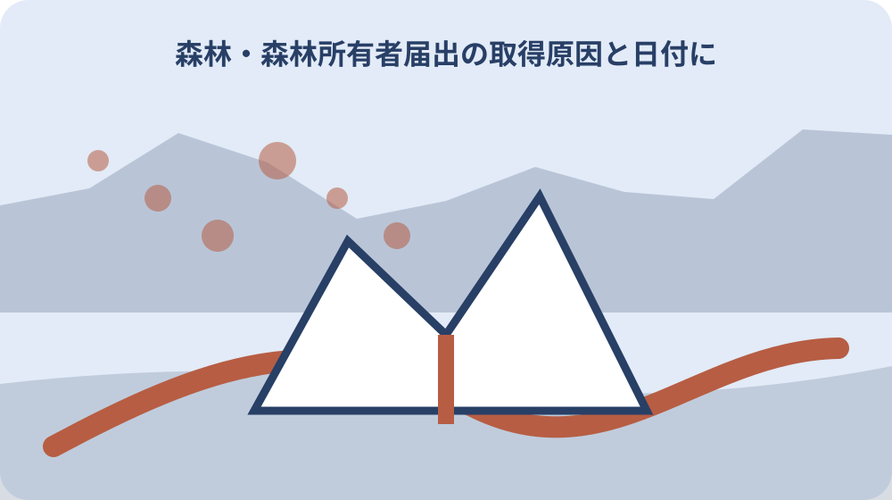

先に結論を確認する
森町の森林を取得した後の届出を知りたい場合は、まず資料の名称、対象、基準日をそろえます。確認の起点は「森林の土地の所有者届出制度」です。個別条件は、資料の本文と担当窓口で確かめてください。
この記事では、公表済みの事実と、個別に確認する条件を分けて扱います。数値や制度名だけを抜き出さず、いつ・誰に・どこで当てはまる情報かまで記録します。
この問いで最初に決めること
森林の土地の所有者届出制度は2012年4月に始まった。
最初に決めるのは、この記事で確かめた情報を何の判断に使うかです。数字、書類、区域、対象者など、答えの単位を一つに絞ると、似た案内を混ぜずに済みます。「森林を取得したら最初に確認すること」の答えを、数値、対象者、場所、時期、手続きのどれとして残すのかを決めます。答えの形が決まれば、不要な資料を減らせます。
確認表の一行目には対象地、目的、時期、確認資料を書きます。未定の項目には確認先と確認日を置き、空欄のまま結論へ進まないようにします。似た名称の制度や統計があるときは、正式名称をそのままメモします。略称だけで保存すると、後で別の資料と取り違えるおそれがあります。この区別は「面積にかかわらず届出が必要」を整理するときにも使います。
この段階では、できる・できないを決める必要はありません。まず確定した事実、条件付きで使える情報、まだ分からない点の三つに分けます。今回の判断に使わない情報も、誤りとして捨てるのではなく、対象外になった理由を残します。別の時期や家族には必要になる場合があります。この整理ができれば、次に開く資料と尋ねる相手を一つに絞れます。確認結果は「届出書の入手と記入」の記録へ反映します。
小さな森林でも届出が必要ですか。地域森林計画の対象民有林であれば、取得面積にかかわらず届出対象です。
一次情報から確定できる範囲
届出対象は、森林法第5条の地域森林計画の対象となっている民有林である。
一次情報から確定できる範囲を見極めます。見出しだけで判断せず、対象となる人や場所、基準日、単位、注記まで確認します。「地域森林計画対象民有林とは」を読む前に、資料の作成者と掲載元を確認します。転載資料なら、可能な範囲で元の公表資料まで戻ってください。
確認の起点は森町と所管機関の一次情報です。公開日と適用日が同じとは限らないため、引用や申請に使う日付を別に控えます。表に数字が並ぶ場合は、人数、世帯、円、平方メートルなどの単位を見ます。割合なら分母、合計なら重複の有無も確認します。この区別は「登記地目と現況が異なる場合」を整理するときにも使います。
別の資料と数値や条件が違うときは、新しい方へ機械的に寄せません。定義、集計方法、対象期間が同じかを先に比べます。資料が説明していない範囲を、書いてある事実から推測しないことも重要です。個別判断が必要な点は、未確認事項として切り分けます。確定できた範囲が狭くても、資料が保証している範囲を正しく残す方が安全です。確認結果は「位置図に示す情報」の記録へ反映します。
森町で当てはめる条件：取得した土地が森林法第5条の地域森林計画対象民有林かを森町の担当窓口で確認する。
森町で条件が変わるポイント
売買で森林の土地を取得した個人または法人は届出対象となる。
森町で条件を当てはめるときは、町全体の説明と個別の対象を切り分けます。地区、集計単位、利用者、時期が変われば必要な確認も変わります。「売買で取得した場合の対象者」を住所へ当てはめる場合は、町名だけでなく地番や区域、施設名など、公式資料が採用している単位に合わせます。
町の案内で確認できることと、県・国・事業者・所有者へ聞くことを分けておくと、一つの窓口へ同じ質問を繰り返さずに済みます。同じ森町内でも、対象区域や担当、利用条件が同じとは限りません。町全体の平均や一般案内を、個別地点の答えへ置き換えないでください。この区別は「90日の起算日を決める」を整理するときにも使います。
地図や一覧を使う場合は、凡例、縮尺、基準日、対象範囲を一緒に保存します。画面の一部分だけを切り取って根拠にしないでください。現況と資料が違って見える場合は、どちらかを誤りと決めず、資料の基準日と現地の確認日を並べて担当窓口へ伝えます。個別条件を確認した結果は、町全体の説明と混ぜずに対象ごとの記録へ戻します。確認結果は「取得原因を証明する添付書類」の記録へ反映します。
資料を集める順番
届出期限は森林の土地の所有者となった日から90日以内である。
資料は、知りたいことに直接答えるものから集めます。関連しそうな資料を先に増やすより、主資料、補足資料、個別確認の順に並べる方が読み違いを防げます。「相続で取得した場合の対象者」に使う資料は、確認した順ではなく役割順に並べます。結論の根拠、条件の補足、個別照会の回答が分かる構成にします。
PDFや表を保存するときは、資料名、ページ番号、確認日をファイル名かメモへ残します。数字だけを転記すると、後から単位や注記を確かめられません。表計算へ転記する場合も、元資料のURLと該当箇所を同じ行へ残します。転記値だけでは、更新時の差分を確かめられません。この区別は「国土利用計画法届出との関係」を整理するときにも使います。
必要書類がある場合は、原本か写しか、発行期限があるか、本人以外でも取得できるかを分けて確認します。取得前に用途を伝えると手戻りを減らせます。資料の版が複数あるときは、最新版だけでなく、今回の基準日に対応する版を選びます。最新版が過去時点の説明に適するとは限りません。集めた資料ごとに役割を一行で書けば、後から不要な重複を整理できます。確認結果は「不動産登記と別に管理する」の記録へ反映します。
相続した場合の90日はいつから数えますか。森町公式案内では、前所有者が死亡した日が起算日です。
現地または窓口で確認すること
相続の場合、90日の起算日は前所有者が死亡した日である。
窓口へ尋ねる前に、知りたいことを一文で説明できるようにします。すでに確認した資料名と、資料だけでは決められなかった点を添えてください。「面積にかかわらず届出が必要」の問い合わせでは、質問を一度に広げすぎません。まず主題に直接関係する一点を確認し、回答に応じて次の質問へ進みます。
問い合わせでは、答えだけでなく根拠となるページや担当部署も確認します。担当外なら、次の窓口へ何を伝えればよいかを聞いて記録します。電話で確認した場合は、部署名、確認日時、回答の要点を残します。担当者個人の名前を必要以上に共有せず、公式の連絡先を記録します。この区別は「届出書の入手と記入」を整理するときにも使います。
現地確認が必要なテーマでは、安全と私有地への配慮を優先します。写真には日付と方向を残し、見えていない範囲を推測で補いません。法務、税務、医療、構造、安全性など専門判断が必要な内容は、担当部署の案内だけで結論を出さず、必要な資格者や所管機関へつなぎます。回答を受けた後は、当初の質問に答えられたかを確認し、別の論点を同じ回答へ混ぜません。確認結果は「森林を取得したら最初に確認すること」の記録へ反映します。
期限と実行日の組み立て方
登記上の地目が山林でなくても、現況が森林で地域森林計画の対象なら届出が必要となる場合がある。
日付を扱うときは、基準日、受付日、実行日、再確認日を別々に置きます。一つの日付で全体を代表させないことが大切です。「登記地目と現況が異なる場合」を時系列にするときは、資料を確認した日と、資料が示す基準日を別の列に置きます。この二つを混ぜると比較を誤ります。
年度をまたぐ案内は、前年の条件をそのまま使わず、当年資料が公開された時点で差分を見ます。月次資料なら何月時点かも明記します。締切がある場合は、締切日だけでなく、資料取得、家族確認、窓口相談を始める日も決めます。休日や郵送期間も見込んでください。この区別は「位置図に示す情報」を整理するときにも使います。
回答待ちがある場合は、自分が次に判断する日を決めます。返答がなければ保留するのか、別案へ切り替えるのかも先に共有します。定期的に更新される情報は、毎回同じ時点で確認すると変化を追いやすくなります。比較の途中で集計時点を変えないようにします。時系列の最後には次の確認日を置き、更新情報を追う担当も決めておきます。確認結果は「地域森林計画対象民有林とは」の記録へ反映します。
森町で当てはめる条件：相続は死亡日、売買などは所有者となった日を起点に90日以内の提出日を管理する。
費用と見えにくい負担
国土利用計画法に基づく土地売買等届出を2週間以内に提出した場合は、森林所有者届出を別に提出する必要がない。
見えにくい負担として、確認にかかる時間、移動、資料取得、維持管理を分けて考えます。金額が示されないテーマでも手間は残ります。「90日の起算日を決める」の負担を見積もるときは、調査を担当する人の時間も含めます。無料の資料でも、探し直しや移動には負担が生じます。
費用が発生しないテーマでも、古い情報を使うことによる手戻りや、家族が同じ調査を繰り返す負担があります。確認記録を残すこと自体が負担軽減になります。家族が遠方にいる場合は、郵送、オンライン共有、現地確認の担当を分けます。一人がすべて抱える前提にしないことが継続の条件です。この区別は「取得原因を証明する添付書類」を整理するときにも使います。
見積りや料金を比べるときは、含まれる作業と含まれない作業をそろえます。金額の大小だけでなく、追加対応が必要になる条件も確認してください。費用や手間が予想より増えたときに、どこで中止・保留するかを先に決めます。続けることだけを前提にすると、判断を急ぎやすくなります。負担が大きいと分かった場合は、確認範囲を狭めることも現実的な選択です。確認結果は「売買で取得した場合の対象者」の記録へ反映します。
登記地目が山林でなければ対象外ですか。地目だけでは決まりません。現況が森林で地域森林計画の対象なら必要となる場合があるため、町へ確認してください。
家族・関係者との共有
提出時には取得した土地の位置を示す図面の写しが必要である。
家族や関係者へは、結論だけを送らず、根拠にした資料と確認日を添えます。前提が変われば答えも変わることを共有します。「国土利用計画法届出との関係」を共有するときは、要約と元資料を分けます。要約には作成者と日付を付け、解釈が含まれることが分かるようにします。
情報を集める人と決定する人が異なる場合は、誰がどこまで確認したかを残します。一人の記憶だけに頼らない形にしてください。個人情報や権利関係を含む資料は、家族全員へ一律に送らず、必要な人だけが見られる場所で管理します。共有リンクの期限も確認します。この区別は「不動産登記と別に管理する」を整理するときにも使います。
意見が分かれたときは、賛否より先に、確定事実、希望、負担、保留条件を並べます。何が分かれば次へ進めるかを決める方が話し合いやすくなります。家族から別の情報が出た場合は、どちらが正しいかをその場で決めず、出典と基準日を確認します。新しい情報も同じ確認表へ追加します。共有後に認識が一致したかを確かめ、異なる理解は確認表の注記として残します。確認結果は「相続で取得した場合の対象者」の記録へ反映します。
判断を急がないための代案
登記事項証明書や売買契約書など、取得原因を証明する書類の写しが必要である。
判断案は、情報を採用する案だけでなく、条件が整うまで待つ案と、今回は使わない案も残します。選択肢を二つに絞りすぎないでください。「届出書の入手と記入」の代案は、目的を変えずに方法を変える案と、目的自体を見直す案に分けます。何を守りたいかが分かると比較しやすくなります。
最初の行動は、資料を一件確認する、窓口を特定する、対象を記すなど、小さく区切れます。大きな手続きや判断を最初の一歩にする必要はありません。公式資料だけで決められない場合は、窓口確認、専門相談、現地確認のどれを先に行うかを選びます。すべてを同時に始める必要はありません。この区別は「森林を取得したら最初に確認すること」を整理するときにも使います。
保留にするときは、理由と再確認日を記録します。情報不足で止まっているのか、条件が合わないと判断したのかを分けておけば、再開しやすくなります。見送る案にも、再検討する条件を付けます。制度の更新、家族状況の変化、資料の入手など、再開のきっかけを具体的にします。代案にも根拠資料を付け、単なる思いつきではなく比較できる選択肢にします。確認結果は「面積にかかわらず届出が必要」の記録へ反映します。
森町で当てはめる条件：国土利用計画法の届出を提出した場合は、森林所有者届出の免除に該当するか提出状況と期限を照合する。

記録を次の人へ残す
2026年4月1日から届出様式が改められ、国籍などの記載欄が追加された。
記録には、確認者、確認日、資料名、分かったこと、残った疑問、次の担当を残します。結論だけでは、前提が変わったときに見直しができません。「位置図に示す情報」の記録は、第三者が読んでも確認経路をたどれることが目標です。自分だけに通じる略称や評価語は避けます。
住所と地番、通称と正式名称、年度と暦年など、似ていて役割の違う情報は欄を分けます。元資料の表記は書き換えずに保存します。回答を要約するときは、事実と自分の判断を別の欄に書きます。担当機関の説明を、自分の結論として言い換えないようにしてください。この区別は「地域森林計画対象民有林とは」を整理するときにも使います。
更新版を入手したら、古い版を黙って上書きしません。何が変わったかを短く残し、個人情報を含む資料は共有範囲も確認します。記録を終える前に、元資料へ戻れるリンクが開くか確認します。リンク切れに備え、資料名と担当部署も文字で残します。最後に未確認事項だけを一覧にし、次の担当がそのまま動ける状態へ整えます。確認結果は「登記地目と現況が異なる場合」の記録へ反映します。
森林所有者届出を出せば相続登記も完了しますか。完了しません。森林所有者届出と不動産登記は別の手続きです。
「森林の土地の所有者届出制度」は、中心となる一次資料です。本文で使う箇所の見出し、対象年度、確認日を一緒に控えます。
大石の視点
森町の農林業案内では、森林所有者届出のほか伐採や林業に関する町の手続きを確認できる。
大石の視点では、一つの答えへ急いでまとめません。対象地、目的、時期、確認資料など、主題に関係する事実を順に分ける方が選択肢を守れます。「取得原因を証明する添付書類」では、公表事実と私の意見を明確に分けます。意見は判断の順序を提案するもので、個別の可否を保証するものではありません。
私は、現地を見ていない事項や資料で確認できない内容を、経験談のように断定しません。分からない点は、次に確かめる条件として明記します。小さな不動産業者としては、対象地、目的、時期、確認資料を一度に結論へ結び付けず、資料で確かめられる範囲から順番に整理することを勧めます。この区別は「売買で取得した場合の対象者」を整理するときにも使います。
まだ最終判断をしていない段階でも、資料と確認記録は役立ちます。家族が後から同じ問いに向き合える形を整えることを優先します。相談者がまだ決めていない状態を尊重し、情報を採用する案、追加確認する案、保留する案、使わない案を同じ表で比べます。結論を迫ることを相談の目的にしません。私は、資料で確認できたことより先へ結論を広げない姿勢を大切にします。確認結果は「90日の起算日を決める」の記録へ反映します。
「森町の農林業・林業案内」は、中心となる一次資料です。本文で使う箇所の見出し、対象年度、確認日を一緒に控えます。
まとめと次の一歩
最後に、結論が資料で裏付けられているかを見直します。事実、条件、期限、確認先のどれかが欠けていれば、判断を一段戻します。「不動産登記と別に管理する」を確認したら、主資料一件、補足資料一件、未確認事項一件を声に出して説明してみます。説明できない部分が次の確認対象です。
今日できる一歩は、主資料を開いて基準日を記すことです。その後に、窓口、現地、家族、専門家のうち次に確認する相手を一つ決めます。まとめには、分かったことだけでなく、今回の資料では分からなかったことも残します。情報がないことと、対象外であることを混同しないでください。この区別は「相続で取得した場合の対象者」を整理するときにも使います。
実行直前には同じ公式ページを開き、更新の有無を確かめます。ページURLだけでなく、自分たちの対象と未確認事項を添えて共有してください。最後の確認日を記したら、次に見直す時期も決めます。更新が多い情報は実行直前、変わりにくい資料は前提が変わったときに確認します。ここまでの記録を一枚にまとめれば、次の確認で最初から調べ直す必要がありません。確認結果は「国土利用計画法届出との関係」の記録へ反映します。
「林野庁 森林の土地の所有者届出制度」は、国や所管機関の補足資料です。本文で使う箇所の見出し、対象年度、確認日を一緒に控えます。